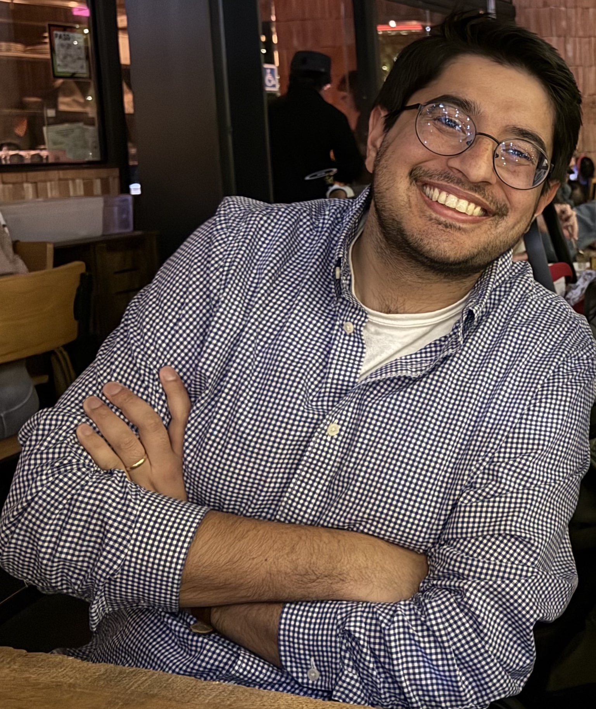

Assistant Professor
Department of Data Sciences and Operations, University of Southern California (USC)
Email: verchand@usc.edu
Office: Bridge 401F
Biosketch
I am an assistant professor in the department of Data Sciences and Operations at the University of Southern California (USC). Prior to this, I held postdoctoral appointments at the University of Cambridge in the Department of Pure Mathematics and Mathematical Statistics and at the Georgia Institute of Technology in the Industrial and Systems Engineering department. Before that, I obtained my PhD in Electrical Engineering at Stanford University and a BS in Electrical Engineering and Computer Science at UC Berkeley.
I am broadly interested in problems at the intersection of optimization, statistics, and computational complexity and am happy to chat about any and all of these.
Note: I previously published under the name Kabir Aladin Chandrasekher.
Selected Publications
- Verchand, K.A., Pensia, A., Haque, S., Kuditipudi, R. (2026), High-dimensional estimation with missing data: Statistical and computational limits, preprint.
- Celentano, M., Cheng, C., Pananjady, A., and Verchand, K.A. (2025), State evolution beyond first-order methods I: Rigorous predictions and finite-sample guarantees, preprint.
- Chandrasekher, K.A., Pananjady, A., and Thrampoulidis, C. (2023), Sharp global convergence guarantees for iterative nonconvex optimization: A Gaussian process perspective, Annals of Statistics.
- Ma, T., Verchand, K.A., Berrett, T.B., Wang, T., and Samworth, R.J. (2026), Estimation beyond Missing (Completely) at Random, Annals of Statistics (to appear).
- Mardia, J., Verchand, K.A., and Wein, A.S. (2024), Low-degree phase transitions for detecting a planted clique in sublinear time, Conference on Learning Theory (COLT).